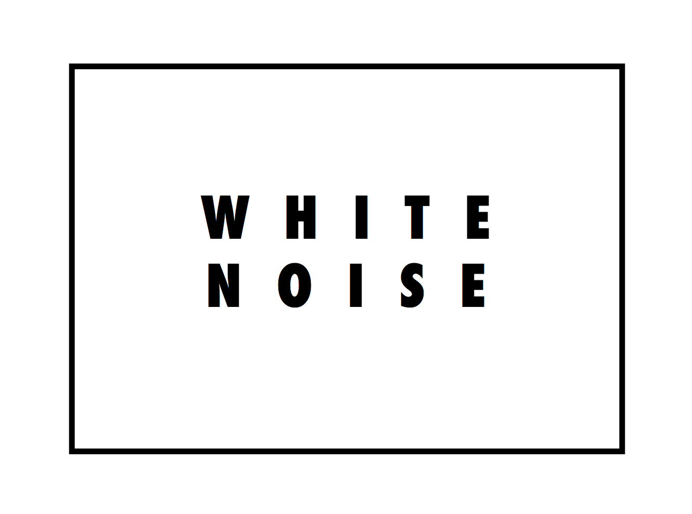
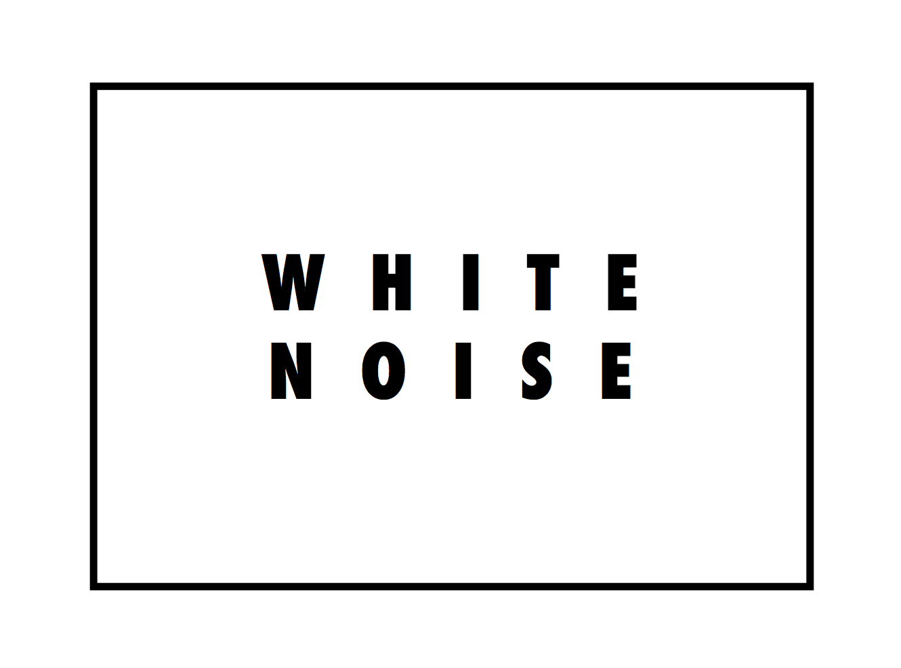

BLOG ENTRY #1
As a final project I plan to make a website for a group of friends starting an online shop/brand. They are just starting to gather their content, and they require a website to get their designs out there and start selling to their customers. The brand needs a functioning website where their target audience (primarily young individuals) can look through the products, get inspired, and potentially create a purchase and order.
10 pages:
index.html - will include an interactive visual, to enter the official site
home.html - official home/navigation page
blog.html - will contain a collection of images that represent and suit the aesthetic of the brand, hoping to create a space of entertainment or inspiration for style to the viewer.
contact.html
about.html
shop.html – separated through following pages:
tshirts.html
hoodies.html
posters.html
stickers.html
(since the brand is made up of a group of designers with different styles, some of the pages above may have to be separated even more depending on how cohesive each designer’s look and feel is compared to one another)
I will be gathering information by interviewing each designer based on their style, and the feel and mood that they wish to convey as designers, so that I present their products using stylistic features that convey the emotions they have in mind. For instance, some of the designers have a more dark and gothic feel that will require a color scheme on a darker spectrum and maybe a more chaotic mood, and some will have a more vibrant and minimal feel. I will record the interview process, and then create a mind map based on listening to the interview, helping to generate more ideas for physically bringing the website to life.
After starting to help them create a sense of the brand, consider their main theme and the emotions that they want to convey, I proposed to them a couple of visual tests for a logo design. They wanted a universal design composed of black and white, using the name of the brand instead of a graphic or a design, with a modern and memorable look.
These are some of the proposals I made for them and they decided would accompany the brand successfully:
 

After considering the logo of the brand and the main visual aesthetic that it is going to personify, I helped them gather most of their designs and sketches from a sketch form to a digital form through Adobe Illustrator tracing. This is a requirement as there has to be a compatible format for the analog designs to be manipulated through other Adobe programs and so that they can be added to the website as JPGs.
These are some examples of the digitalized sketches:

.jpeg)

After developing their sketches into a digital form, I helped them test out how the designs are going to look on a T-shirt, a process that aids in design but is also necessary for the website's online shop.
These are some examples of the T-Shirt Tests: